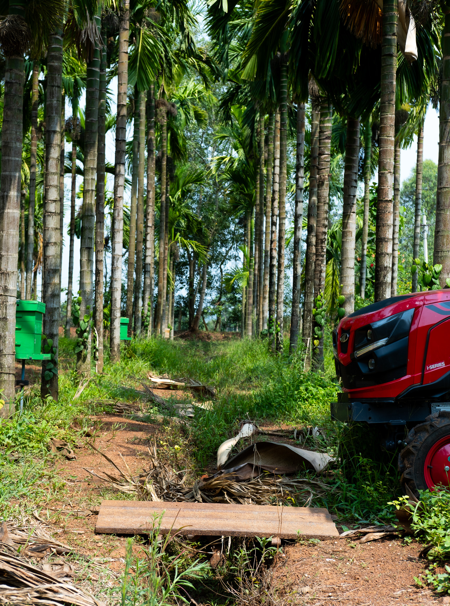
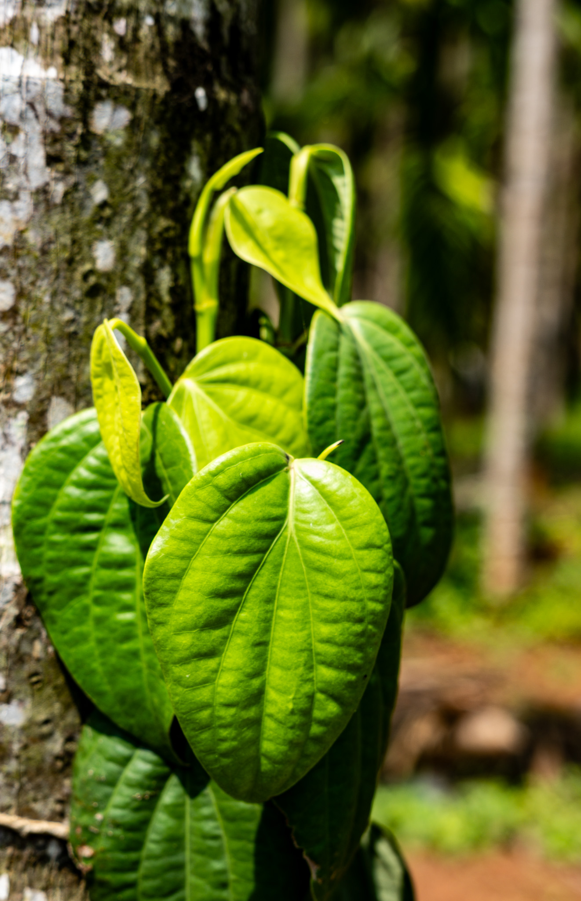
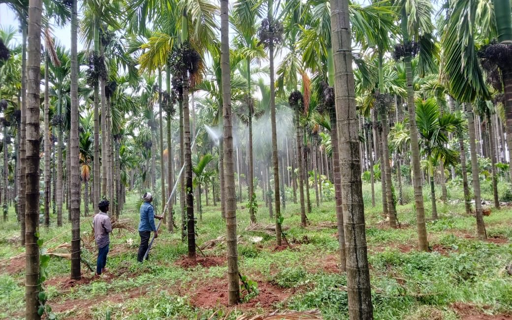
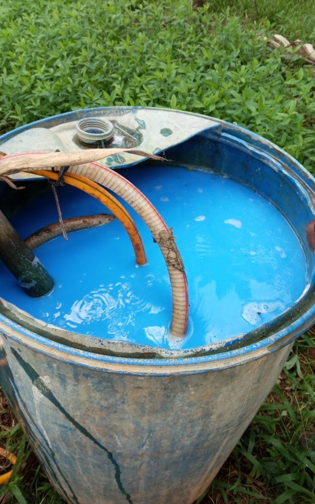
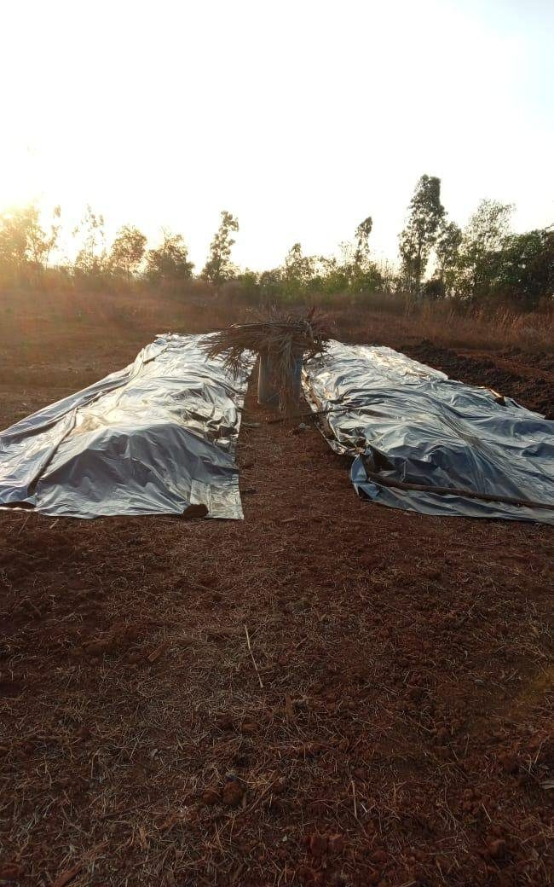
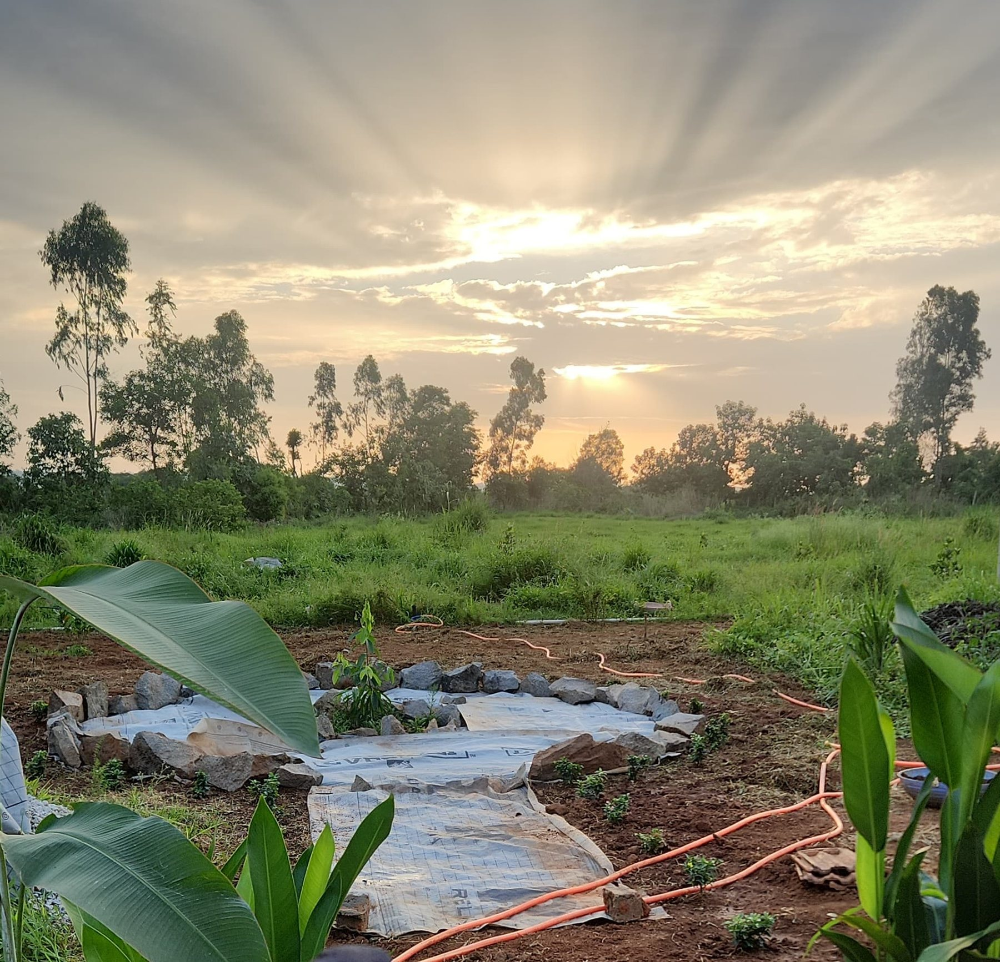
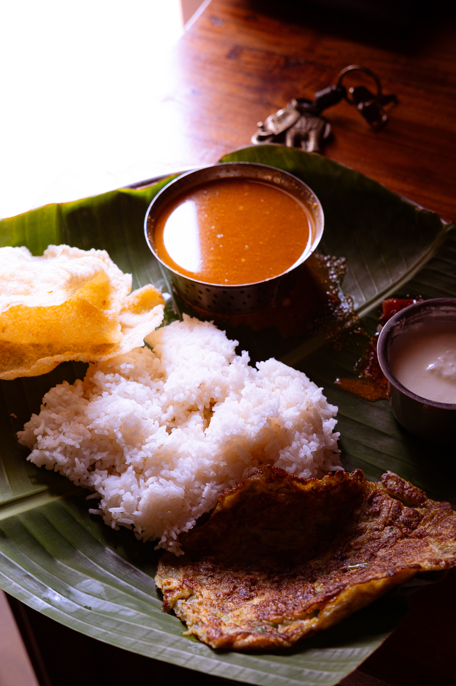

Deep in the Western Ghats of Karnataka. High rainfall, red lateritic soil, areca country. About 15 acres of owned, worked land — every part of it productive, instrumented, or both.
Remote, but reachable — full directions are shared on approval.
A schematic of the holding — plots sized by acreage, not surveyed position. Roughly 15.5 acres in all.

15.5acresSchematic — proportional by acreage, illustrative of layout. Areca + pepper and the forest plantation carry most of the land; the working systems and house occupy the rest. A surveyed map can replace this when ready.
Synthetic inputs are avoided unless there's no alternative. The farm is built to close its own loops — waste becomes fertility, water is caught and held, biodiversity is tracked rather than displaced.




The farm runs day-to-day on people who've worked this land for years.
Farm operations, on-site lead — and the farm's beekeeper.
Farm managers, 20+ years between the rows.
Tends the pepper vines.
Runs the farmhouse kitchen.
Resident farm dog.
Photos to be added with consent.

Here's what's genuinely rare: comfortable, productive work this deep in rural Western Ghats is normally impossible. The nearest five-star hotel is ~400 km away — Bangalore, Mumbai, or Mangalore.
The farmhouse closes that gap. Eco-built, but properly equipped — so you're in the middle of plantation and forest, and still rest well, stay connected, and get real work done.